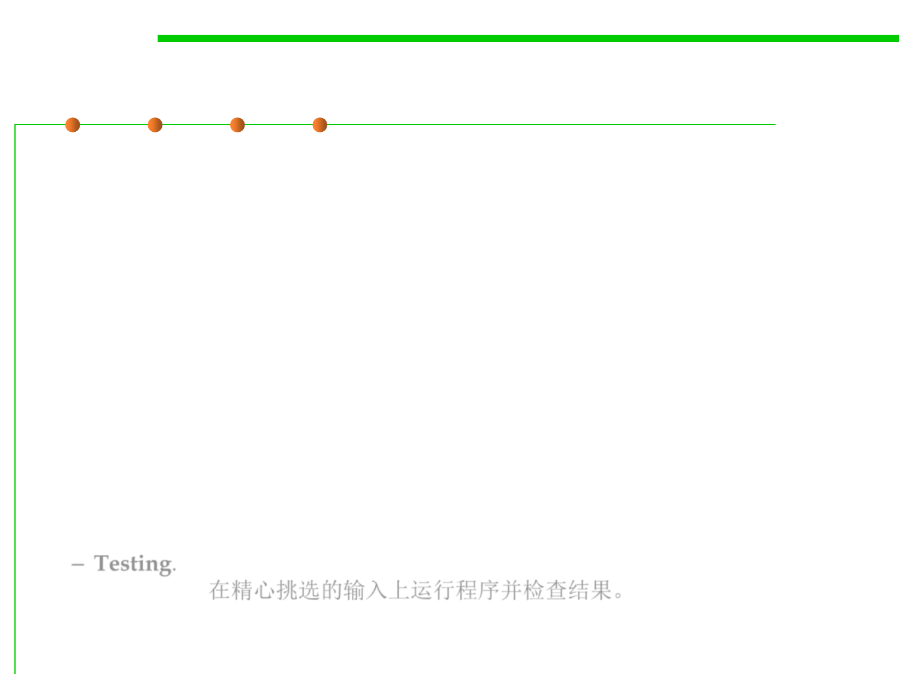

Software Validation
7.5 Testing and Test-First Programming
▪ Testing is an example of a more general process called validation.
▪ The purpose of validation is to uncover problems in a program and
thereby increase your confidence in the program’s correctness.
▪ Validation includes:
– Formal reasoning(形式化推理) about a program, usually called verification.
Verification constructs a formal proof that a program is correct.
Verification is tedious to do by hand, and automated tool support for
verification is still an active area of research. (out of scope of this course)
– Code review(代码评审) Having somebody else carefully read your code,
and reason informally about it, can be a good way to uncover bugs. It’s
much like having somebody else proofread an essay you have written. (to
be discussed in Chapter 9)
– Testing. Running the program on carefully selected inputs and checking
the results. 在精心挑选的输入上运行程序并检查结果。